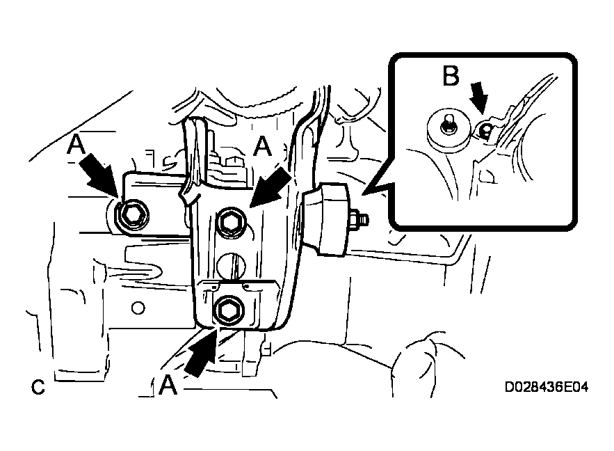
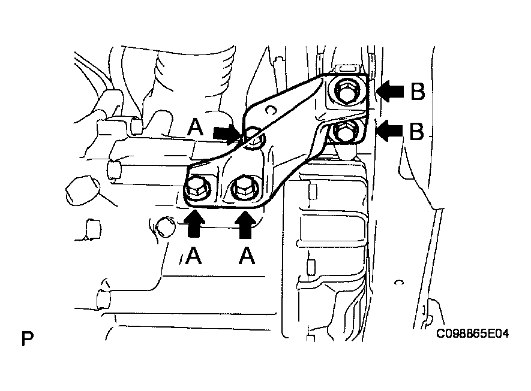
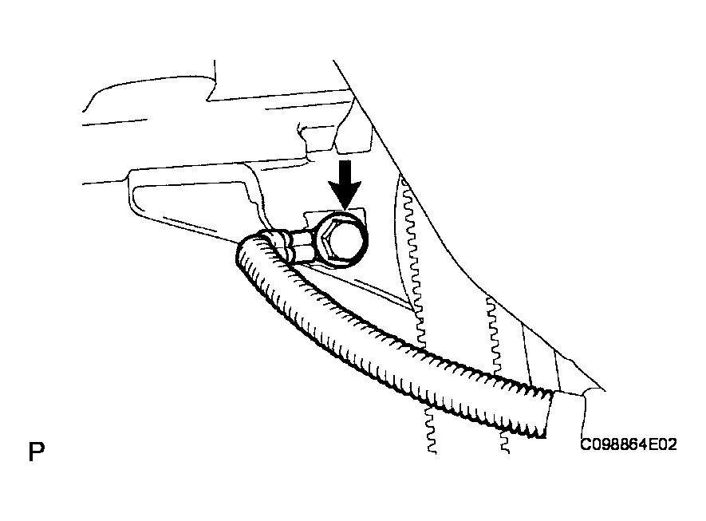

Manual Transaxle Assembly: Installation
- INSTALL MANUAL TRANSAXLE ASSEMBLY
- Align the input shaft with the clutch disc and install the transaxle to the engine.
- Install the 7 bolts.
Torque: 33 N*m (340 kgf*cm, 24 ft.*lbf)
- INSTALL REAR ENGINE MOUNTING BRACKET
- Install the rear engine mounting bracket to the transaxle with the 4 bolts.

Courtesy of © TOYOTA, LICENSE AGREEMENT TMS1002Torque: 64 N*m (653 kgf*cm, 47 ft.*lbf) for bolt A
18 N*m (180 kgf*cm, 13 ft.*lbf) for bolt B
- Install the rear engine mounting bracket to the transaxle with the 4 bolts.
- INSTALL ENGINE MOUNTING BRACKET LH
- Install the engine mounting bracket LH to the transaxle with the 3 bolts.
Torque: 64 N*m (653 kgf*cm, 47 ft.*lbf) for bolt A
- Connect the engine mounting bracket LH to the engine mounting insulator with the 2 bolts.

Courtesy of © TOYOTA, LICENSE AGREEMENT TMS1002Torque: 49 N*m (500 kgf*cm, 36 ft.*lbf) for bolt B
- Install the ground cable to the engine mounting bracket with the bolt.

Courtesy of © TOYOTA, LICENSE AGREEMENT TMS1002Torque: 26 N*m (260 kgf*cm, 19 ft.*lbf)
- Install the engine mounting bracket LH to the transaxle with the 3 bolts.
- INSTALL STARTER ASSEMBLY
- Install the starter with the 2 bolts.
Torque: 37 N*m (380 kgf*cm, 27 ft.*lbf)
- Connect the starter connector.
- Install the wire with the nut.
Torque: 9.8 N*m (100 kgf*cm, 87 in.*lbf)
- Install the flywheel housing side cover.
- Install the starter with the 2 bolts.
- INSTALL FRONT SUSPENSION CROSSMEMBER SUB-ASSEMBLY (See INSTALLATION )
- INSTALL FRONT DRIVE SHAFT ASSEMBLY LH
- Install the front drive shaft (see REASSEMBLY ).
- INSTALL FRONT DRIVE SHAFT ASSEMBLY RH
HINT:
Install the RH side by the same procedures as the LH side.
- INSTALL FRONT AXLE ASSEMBLY LH
- Install the front axle (see INSTALLATION ).
- INSTALL FRONT AXLE ASSEMBLY RH
HINT:
Install the RH side by the same procedures as the LH side.
- INSTALL FRONT EXHAUST PIPE ASSEMBLY (See INSTALLATION )
- INSTALL FRONT FLOOR PANEL BRACE (See INSTALLATION )
- CONNECT TRANSMISSION CONTROL CABLE ASSEMBLY
- Connect the 2 cable ends to the transaxle with the 2 washers and 2 clips.
- Install 2 new clips to the control cable bracket.
- INSTALL AIR CLEANER BRACKET
- Install the air cleaner bracket with the bolt.
Torque: 19 N*m (195 kgf*cm, 14 ft.*lbf)
- Install the air cleaner bracket with the bolt.
- CONNECT CLUTCH RELEASE CYLINDER TO FLEXIBLE HOSE TUBE
- Using SST, connect the flexible hose tube.
SST 09023-00101
Torque: 15 N*m (155 kgf*cm, 11 ft.*lbf)
- Connect the flexible hose tube with the 2 bolts.
Torque: 19 N*m (195 kgf*cm, 14 ft.*lbf)
- Using SST, connect the flexible hose tube.
- CONNECT CONNECTOR
- Connect the back-up light switch connector.
- CONNECT WIRE HARNESS
- Connect the wire harness clamp with the bolt.
Torque: 5.0 N*m (51 kgf*cm, 44 in.*lbf)
- Connect the wire harness clamp with the bolt.
- INSTALL BATTERY
- INSTALL AIR CLEANER ASSEMBLY
- INSTALL NO. 2 CYLINDER HEAD COVER
Torque: 7.0 N*m (71 kgf*cm, 62 in.*lbf)
- INSTALL COWL TOP PANEL OUTER (See INSTALLATION )
- INSTALL HOOD SUB-ASSEMBLY (See ON-VEHICLE INSPECTION )
- INSPECT HOOD SUB-ASSEMBLY (See ON-VEHICLE INSPECTION )
- ADJUST HOOD SUB-ASSEMBLY (See ON-VEHICLE INSPECTION )
- INSTALL FRONT WHEEL
Torque: 103 N*m (1,050 kgf*cm, 76 ft.*lbf)
- ADD TRANSAXLE OIL (See REPLACEMENT )
- INSPECT AND ADJUST TRANSAXLE OIL (See MANUAL TRANSAXLE OIL )
- CONNECT CABLE TO NEGATIVE BATTERY TERMINAL
- PERFORM INITIALIZATION
- Perform initialization (see PRECAUTION
).NOTE: Certain systems need to be initialized after disconnecting and reconnecting the cable from the negative (-) battery terminal.
- Perform initialization (see PRECAUTION
).
- INSTALL ENGINE UNDER COVER RH
- INSTALL ENGINE UNDER COVER LH
- INSPECT FRONT WHEEL ALIGNMENT
- Inspect the FRONT WHEEL ALIGNMENT .
- CHECK ABS SPEED SENSOR SIGNAL
- Check the ABS speed sensor signal (see PROBLEM SYMPTOMS TABLE ).
- CHECK FOR EXHAUST GAS LEAKS